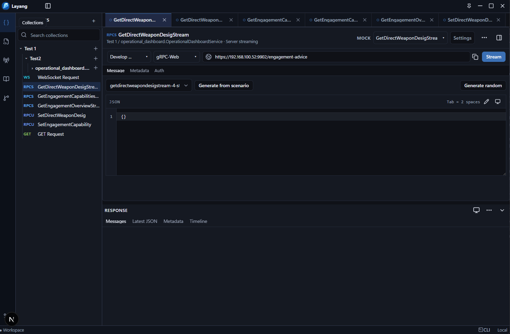
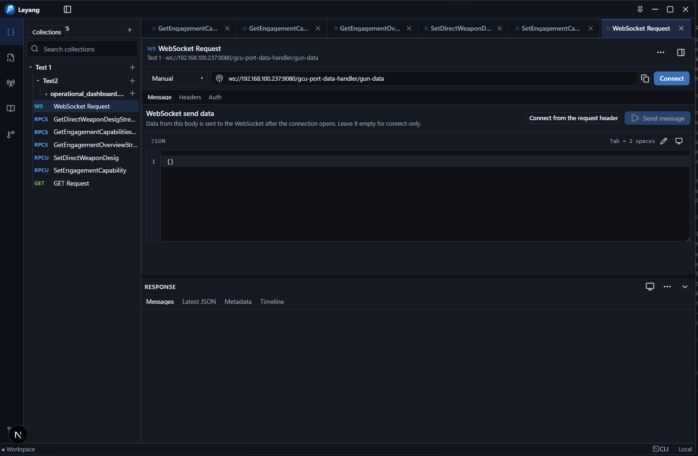
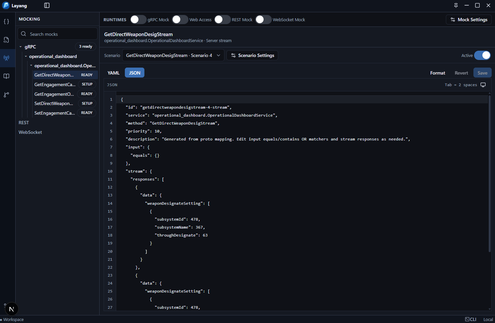
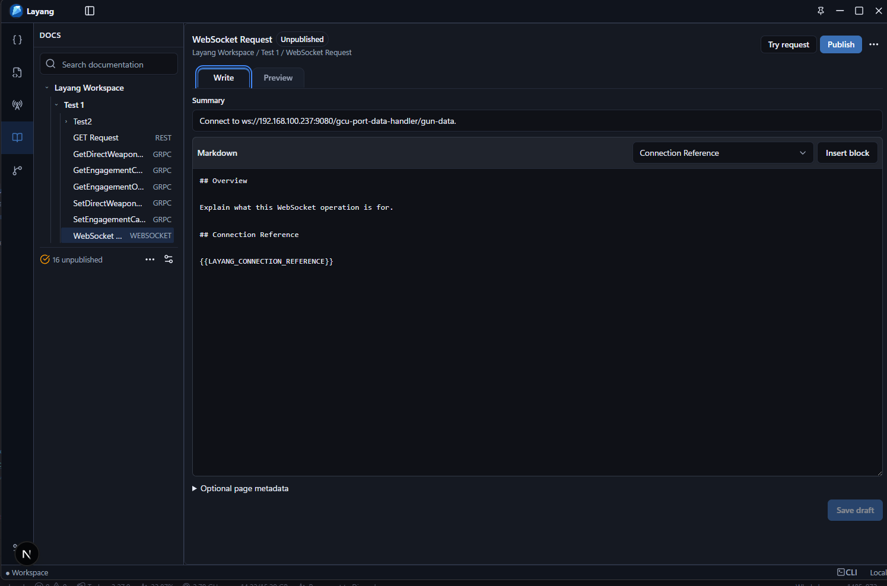

Native gRPC and gRPC-Web
Run unary and server-streaming calls with request bodies, metadata, response history, trailers, and test assertions.
target: localhost:50051 method: demo.v1.GreeterService/SayHello transport: native-grpc
Layang is a workspace-based API workbench for REST, WebSocket, gRPC, and gRPC-Web. Build requests, run local mocks, inspect responses, benchmark latency, generate docs, and automate checks from one portable workspace.
layang run ./workspace --env dev --reporter junit

Proto files, requests, docs, mocks, environments, and history stay together.
Send REST, WebSocket, gRPC, and gRPC-Web requests, create mock scenarios, save examples, and generate docs from one workspace.
Import proto files, create REST and WebSocket requests, save examples, benchmark latency, generate docs, and keep everything in a workspace folder.
Run unary and server-streaming calls with request bodies, metadata, response history, trailers, and test assertions.
target: localhost:50051 method: demo.v1.GreeterService/SayHello transport: native-grpc
Build REST requests with params, headers, auth, body modes, local mocks, scenario matching, response templates, logs, docs, and examples.
Create WebSocket requests, connect to ws/wss endpoints, send messages, inspect events, mock responses, benchmark latency, and publish docs.
Browse imported `.proto` files, services, methods, request messages, and response messages.
Run latency samples and export benchmark JSON reports for active methods.
Create Markdown or HTML documentation from proto files, examples, mocks, and latest responses.
Validate workspaces, list saved requests, check mocks, and run native gRPC requests from the CLI.
WebSocket collections support live client testing, desktop-managed mock responses, benchmark exports, and generated docs as part of the official 1.0.4 release.

Build REST collections with params, headers, auth, body modes, local mock scenarios, request matching, response templates, logs, generated docs, and saved examples.
Compose methods, URLs, path params, query params, headers, auth, JSON, text, and form bodies from the workspace.
Match by path, query, headers, body text, or JSON path, then return templated responses with delays and priority.
Save REST examples, publish generated docs, and review recent matched or missed mock requests.
The desktop app can create or open a workspace folder. A workspace stores a snapshot plus Git-friendly files under folders such as `protos/`, `requests/`, `examples/`, `docs/`, `environments/`, `history/`, and `mocks/`.
protos/ demo/v1/greeter.proto requests/ tabs.json items/ examples/ examples.json docs/ published-docs.json saved-results.json mocks/ mock-server.json scenarios/ environments/ environments.json history/ history.json
Enable mock behavior per method, choose active scenarios, and tune stream intervals, loop mode, and response sequences from the app.

Keep mock behavior focused by storing scenario files per RPC method.
Set interval, loop behavior, and max loops for server-streaming responses.
Run a desktop-managed mock server for local clients and integration work.
Scenario JSON/YAML stays in the same portable workspace as requests and docs.
Layang can generate Markdown or HTML docs using proto metadata, saved examples, mock scenarios, and the latest saved responses.

Keep desktop exploration and CI checks aligned. The CLI reads the same workspace files that the app writes.
layang validate ./workspace --json layang list ./workspace layang run ./workspace \ --env dev \ --reporter junit \ --output reports/layang-junit.xml layang mock:check ./workspace
Create REST, WebSocket, gRPC, and gRPC-Web requests, run local mocks, generate docs, benchmark methods, and automate checks in CI.